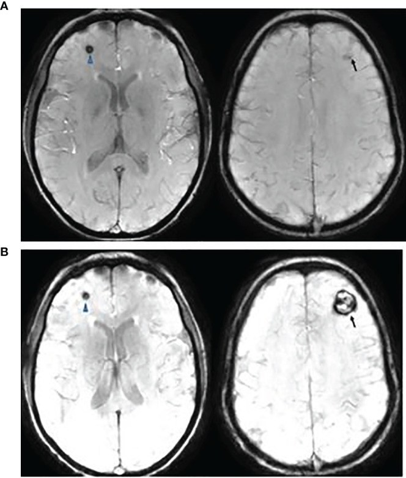
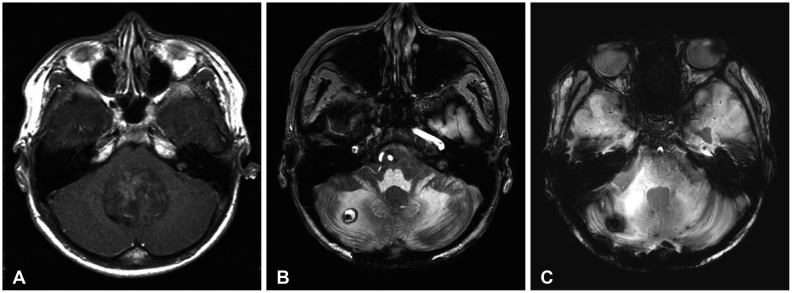
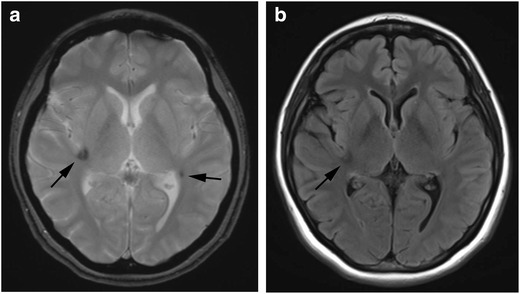
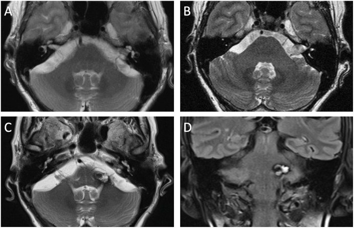

1797 — Vi chảy máu & hang mạch do xạ trị sọ ở trẻ: đọc SWI sau xạ, phân biệt tái phát u / Radiation-induced cerebral microbleeds and cavernomas in children
Tags: pattern:vi-chay-mau pattern:hang-mach vung:nao-nhi score:Zabramski score:MARS protocol:SWI-3T
Mức chắc chắn (certainty): tổng hợp y văn (literature synthesis) — ghép 1 đoàn hệ 79 trẻ medulloblastoma so sánh proton–photon (Front Oncol 2021, PMC8542782, CC BY 4.0), 1 đoàn hệ 190 trẻ u não nguyên phát (J Neurol Sci 2017, PMID 27856004 — chỉ trích số liệu), 2 đoàn hệ 59 và 171 trẻ (J Neurosurg Pediatr 2006, PMID 16506497; Strahlenther Onkol 2008, PMID 18427759 — chỉ trích số liệu), 1 nghiên cứu SWI–FLAIR ở người lớn sau xạ (Res Diagn Interv Imaging 2023, PMC11265380, CC BY 4.0), 2 ca RICM (Brain Tumor Res Treat 2025, PMC12070075, CC BY-NC 4.0; Brain Spine 2026, PMC12972701, CC BY 4.0) và 1 tổng quan hình ảnh biến chứng thần kinh ở trẻ ung thư (Insights Imaging 2018, PMC5991004, CC BY 4.0).
Bài này trả lời 4 câu hỏi của lần chụp theo dõi "bình thường" ở trẻ đã xạ trị não: (1) SWI có đốm tối mới — vi chảy máu do xạ hay di căn/chảy máu khác? (2) Đốm đó tiến triển thành hang mạch thật không, và bao lâu? (3) Khi nào mổ, khi nào chỉ theo dõi? (4) Một khối mới ngấm thuốc trong trường chiếu là hang mạch, hoại tử xạ hay u thứ phát? Nối 1795 – Vi chảy máu trong moyamoya (cơ chế huyết động, không phải xạ), 204 – Hoại tử phóng xạ, 261 – Bệnh não chất trắng do xạ, 268 – Bệnh tủy do xạ.
1. Tổng quan bệnh học – cơ chế hình ảnh
1.1 Vì sao xạ trị tạo ra "đốm tối" rồi "hang mạch"
- Tổn thương nội mạc vi mạch do xạ: tia ion hóa gây chết tế bào nội mạc, dày màng đáy, huyết khối vi mạch và giãn mao mạch (telangiectasia). Các mạch giãn thành mỏng, không có nhu mô thần kinh xen giữa, dòng chảy chậm, áp lực thấp → cavernoma (hang mạch). Máu rỉ qua thành mạch → hemosiderin lắng đọng quanh tổn thương.
- TẠI SAO SWI/T2* thấy được mà T2/FLAIR bỏ sót: hemosiderin và deoxyhemoglobin là chất thuận từ (paramagnetic) — làm lệch từ trường cục bộ, tạo hiệu ứng cảm ứng từ lan rộng hơn tổn thương thật (blooming artifact). Chuỗi gradient-echo (GRE) và đặc biệt SWI với ảnh minIP nhạy với hiệu ứng này, phát hiện được ổ chảy máu < 5–10 mm mà T2/FLAIR chỉ thấy như "sạch". Đây là lý do bắt buộc có SWI/T2* trong mọi lần chụp theo dõi sau xạ não.
- TẠI SAO vòng hemosiderin hoàn chỉnh lại quan trọng: hang mạch có vòng hemosiderin bao quanh toàn chu vi (sản phẩm của nhiều đợt vi chảy máu), bên trong là "popcorn" tín hiệu hỗn hợp do máu ở các tuổi khác nhau (T1/T2 lẫn lộn: methemoglobin sáng T1, hemosiderin tối T2). U/di căn không có kiến trúc "popcorn + vòng hoàn chỉnh" và thường ngấm thuốc + có phù.
- TẠI SAO tổn thương không nằm đúng "trường chiếu": xạ làm tổn thương vi mạch lan tỏa toàn não (nhất là sau xạ toàn não), nên chỉ 15,8–19,8% tổn thương trùng khớp vùng chiếu xạ khu trú — đừng loại trừ vì "ngoài trường chiếu".
1.2 Ngưỡng định lượng nằm lòng (bắt buộc nhớ)
| Đại lượng | Con số | Nguồn |
|---|---|---|
| Trẻ medulloblastoma sau xạ có CM/CM-like trên GRE/SWI | 86,1% (68/79); photon 86,7% (26/30), proton 85,7% (42/49) | PMC8542782 |
| Thời gian xuất hiện CM | photon 40,2 tháng vs proton 18,2 tháng (P = 1,98 × 10⁻⁴) | PMC8542782 |
| Loại tổn thương lần đầu | Zabramski type IV (đốm, chỉ thấy trên GRE/SWI): 93,6% (59/63) | PMC8542782 |
| Phát hiện bằng chuỗi nào | GRE 29,8 tháng vs SWI 23,7 tháng sau xạ | PMC8542782 |
| Cần mổ | 3/79 (1 photon, 2 proton); không khác giữa 2 phương thức | PMC8542782 |
| Tích lũy CM sau xạ (59 trẻ medulloblastoma) | 5,6% / 14% / 43% ở 3 / 5 / 10 năm; 31% có tổn thương | PMID 16506497 |
| Tích lũy CM sau xạ (171 trẻ) | 2,24% / 3,86% / 4,95% / 6,74% ở 5 / 10 / 15 / 20 năm; tiềm tàng 2,9–18,4 năm | PMID 18427759 |
| Tuổi lúc xạ < 10 | nguy cơ cao hơn, tiềm tàng ngắn hơn (P = 0,044) | PMID 18427759 |
| Lắng đọng hemosiderin khu trú (FHD) | 41,6% nhóm có xạ (n = 132) vs 0% nhóm không xạ (n = 58) | PMID 27856004 |
| Yếu tố nguy cơ FHD | tuổi nhỏ P = 0,031; thời gian theo dõi P = 0,010; mô học embryonal P = 0,003 | PMID 27856004 |
| Trùng khớp vị trí với trường chiếu | chỉ 15,8% (xạ khu trú) và 19,8% (xạ toàn não + khu trú) | PMID 27856004 |
| Nguy cơ chảy máu của cavernoma | 0,7–1,1%/tổn thương/năm khi chưa chảy máu; ~4,5%/năm khi đã chảy máu | StatPearls 2023 (tổng quan) |
| Vi chảy máu (CMB) sau xạ | 28/51 lần chụp có CMB; số CMB tăng theo thời gian, không theo liều; không trùng FLAIR trong 7 năm đầu | PMC11265380 |
2. Mẫu hình + chẩn đoán phân biệt theo vị trí (gamut)
Mẫu hình A — đốm tối đơn độc hoặc rải rác trên SWI trong vùng đã xạ:
- Vi chảy máu do xạ (CMB) → đốm < 5 mm, không vòng, không phù, không ngấm; nhiều đốm theo thời gian.
- Hang mạch type IV (dot-like) → đốm 5–10 mm chỉ thấy trên GRE/SWI, có thể lớn dần thành type II.
- Di căn chảy máu (melanoma, choriocarcinoma, thyroid, RCC) → thường ngấm thuốc, phù, lớn nhanh, bệnh cảnh ung thư nguyên phát.
- Vôi hóa → cũng "blooming" trên SWI; phân biệt bằng CT (tăng đậm độ), không có vòng hemosiderin trên T2.
Mẫu hình B — khối "popcorn" có vòng hemosiderin, thùy não hoặc hố sau:
- Hang mạch do xạ (type I–III) → vòng hoàn chỉnh, không phù (trừ khi vừa chảy máu), không/ngấm rất ít.
- Hoại tử xạ → tiềm tàng 6–24 tháng, bờ "bong bóng xà phòng", ngấm viền, phù, giảm tưới máu.
- U thứ phát do xạ (meningioma, sarcoma, RIT) → khối ngấm thuốc mạnh, lớn dần, tiềm tàng nhiều năm.
- Tái phát u → ngấm thuốc + phù + choán chỗ, DWI có thể hạn chế (u đặc).
Mẫu hình C — nhiều tổn thương + bất thường mạch nuôi:
- DVA (developmental venous anomaly) → "caput medusae" ngấm thuốc, thường đi kèm hang mạch; không cắt bỏ DVA (nguy cơ nhồi máu tĩnh mạch).
- AVM → flow void lớn, động mạch nuôi rõ; khác hang mạch (không có shunt).
Gamut theo vị trí: thùy trán/đỉnh (hay gặp nhất, trong trường chiếu), nhân xám–bao trong, thân não/tiểu não (vùng boost trong medulloblastoma — nguy cơ chảy máu và di chứng cao hơn).
3. Bảng so sánh phân biệt (ma trận đối chiếu)
| Thực thể (entity) | Hình ảnh điển hình | Chốt vào (rule-in) | Chốt loại (rule-out) | Gợi ý xác nhận |
|---|---|---|---|---|
| Hang mạch do xạ (Zabramski I–III) | "Popcorn" tín hiệu hỗn hợp, vòng hemosiderin hoàn chỉnh, blooming mạnh trên SWI, không phù, không ngấm | Vòng hemosiderin kín + popcorn + trong vùng đã xạ + không ngấm | Ngấm thuốc đáng kể + phù lan rộng → không phải hang mạch đơn thuần | SWI + T1+Gd; so ảnh cũ thấy lớn chậm qua nhiều năm |
| Hang mạch type IV (dot-like) | Đốm 5–10 mm chỉ thấy trên GRE/SWI, T1/T2 bình thường | Chỉ dương trên SWI/GRE + không ngấm + không phù | Thấy rõ trên T1/T2 và ngấm thuốc → u/di căn | SWI 3T; theo dõi 6–12 tháng |
| Vi chảy máu do xạ (CMB) | Đốm < 5 mm, nhiều ổ, rải rác, không vòng | Nhiều đốm nhỏ + tăng dần theo thời gian sau xạ | Một ổ đơn độc > 10 mm có vòng → hang mạch thật | SWI minIP; đếm theo MARS |
| Tái phát u | Khối ngấm thuốc, phù, choán chỗ, lớn nhanh | Ngấm thuốc + phù + lớn dần + DWI hạn chế | Không ngấm, không phù, ổn định nhiều năm → không phải tái phát | T1+Gd, DWI, MRS/perfusion |
| Hoại tử xạ | Bờ "bong bóng", ngấm viền, phù, 6–24 tháng sau xạ | Tiềm tàng 6–24 tháng + ngấm viền + giảm tưới máu | Tiềm tàng > 3 năm, vòng hemosiderin kín → hang mạch | Perfusion/DSC, MRS (không có choline cao) |
| U thứ phát do xạ | Khối ngấm thuốc mạnh, xương/vỏ não, tiềm tàng nhiều năm | Ngấm mạnh + lớn liên tục + ngoài mô u cũ | Ổn định, không ngấm → không phải u | T1+Gd, CT xương, sinh thiết khi nghi |
| Vôi hóa | Tăng đậm độ trên CT, blooming trên SWI, không vòng | CT tăng đậm độ + không vòng hemosiderin | Có vòng hemosiderin + popcorn → hang mạch | CT không cản quang |
| DVA đi kèm | "Caput medusae" ngấm thuốc, tĩnh mạch dẫn lưu | Ngấm hình nan hoa + tĩnh mạch dẫn lưu | Không có mạch nuôi → không phải DVA | T1+Gd; không cắt DVA |

Bệnh nhân nữ 20 tuổi, medulloblastoma xạ proton lúc 10 tuổi (36 Gy toàn trục + 55,9 Gy hố sau). SWI ở 8 năm (A) và 10 năm (B): tổn thương trán trái (mũi tên) lớn dần thành hang mạch có vòng hemosiderin, trong khi đốm trán phải (đầu mũi tên) đứng yên — chính là Zabramski type IV. Bệnh nhân đau đầu tăng, mổ lấy hang mạch trán trái và hết đau. Nguồn: Front Oncol 2021 (PMC8542782), CC BY 4.0.Ba câu hỏi đọc phim theo thứ tự
- Đốm tối có vòng hemosiderin kín và "popcorn" bên trong không? Có → hang mạch; không → vi chảy máu/vôi hóa/khác.
- Có ngấm thuốc và phù không? Có → u, hoại tử xạ, áp-xe; không → hang mạch.
- Mốc thời gian và tốc độ lớn? Lớn chậm qua nhiều năm trong vùng đã xạ = hang mạch; lớn nhanh vài tháng = u/hoại tử.
4. Protocol chụp + phân độ + lịch theo dõi
4.1 Protocol MRI sau xạ não ở trẻ
- SWI (hoặc T2* GRE nếu không có SWI): TE dài 20–40 ms, lát 1–2 mm, dựng minIP để không bỏ sót đốm nhỏ. Đây là chuỗi quyết định, không thay bằng FLAIR.
- FLAIR + T2 + DWI + T1 ± gadolinium: T1+Gd để loại tái phát/hoại tử/u thứ phát (giai đoạn đầu sau xạ); sau 5 năm có thể bỏ cản quang nếu không nghi ngờ, nhưng vẫn giữ SWI.
- CT không cản quang khi cần phân biệt vôi hóa với máu (blooming giả).
- 1,5 T vẫn phát hiện được nhưng 3 T + SWI nhạy hơn và phát hiện sớm hơn (SWI 23,7 tháng vs GRE 29,8 tháng).
- Trẻ nhỏ: cân nhắc thuốc an thần và thời gian chụp; không rút ngắn chuỗi SWI để bù thời gian.
4.2 Phân độ Zabramski (dùng cho hang mạch) và MARS (đếm vi chảy máu)
- Zabramski type I: máu bán cấp — T1/T2 sáng, vòng hemosiderin; thường có triệu chứng cấp.
- Type II: "popcorn" hỗn hợp, vòng hemosiderin hoàn chỉnh, không phù — thể điển hình nhất.
- Type III: mạn — lõi T1/T2 giảm/đồng tín hiệu, vòng hemosiderin rõ ("black dot").
- Type IV: đốm chỉ thấy trên GRE/SWI, T1/T2 bình thường — 93,6% tổn thương do xạ khởi đầu ở dạng này.
- MARS (Microbleed Anatomical Rating Scale): đếm CMB theo 3 vùng (thùy, sâu, hố sau) × 2 bên; dùng để theo dõi số lượng theo thời gian thay vì mô tả cảm tính.
4.3 Lịch theo dõi và ngưỡng can thiệp
- Theo dõi: MRI + SWI hằng năm ở trẻ đã xạ não, kéo dài ≥ 10 năm (tích lũy tới 43% ở 10 năm, tiềm tàng tới 18,4 năm); trẻ xạ < 10 tuổi, mô học embryonal, hoặc xạ toàn trục → nguy cơ cao hơn, không ngừng theo dõi sớm.
- Chỉ định mổ: chảy máu có triệu chứng tái diễn, choán chỗ/đau đầu tăng (như ca trong ảnh), hoặc chẩn đoán không chắc chắn sau khi loại u. Không mổ tổn thương type IV không triệu chứng — nguy cơ chảy máu 0,7–1,1%/năm.
- Không xạ lại vào hang mạch (không có bằng chứng giảm chảy máu; nguy cơ tổn thương mô lành).
- Không sinh thiết hang mạch điển hình — nguy cơ chảy máu, và mô bệnh không đổi xử trí.
flowchart TD
A[Trẻ đã xạ trị não, chụp theo dõi] --> B[SWI/T2*: có đốm tối mới?]
B -->|Không| C[Theo dõi hằng năm, giữ SWI]
B -->|Có| D{Đốm nhỏ < 5 mm, nhiều ổ, không vòng?}
D -->|Có| E[Vi chảy máu do xạ: đếm MARS, theo dõi]
D -->|Không| F{Vòng hemosiderin kín + popcorn, không ngấm, không phù?}
F -->|Có| G[Hang mạch: phân độ Zabramski, theo dõi 6-12 tháng]
F -->|Không| H{Có ngấm thuốc hoặc phù?}
H -->|Có| I[Loại tái phát u, hoại tử xạ, u thứ phát: T1+Gd, perfusion, MRS]
H -->|Không| J[CT để loại vôi hóa]
G --> K{Triệu chứng tăng hoặc chảy máu tái diễn?}
K -->|Có| L[Mổ lấy tổn thương]
K -->|Không| C
5. Biến thể bình thường và cạm bẫy
- Blooming của vôi hóa và kim loại: răng, mão, shunt, kẹp phẫu thuật, đầu đinh vít sọ đều tạo đốm tối; CT không cản quang hoặc ảnh phase phân biệt. Đừng gọi là "di căn mới".
- Một ổ chảy máu lớn che mất nhiều đốm nhỏ: đọc minIP và các lát mỏng, đừng dừng ở tổn thương gây triệu chứng.
- Đốm trên SWI không đồng nghĩa hang mạch: vi chảy máu, vôi hóa, di căn melanoma (T1 sáng do melanin/methHb) đều tối trên SWI. Vòng hemosiderin kín mới là chốt.
- "Tổn thương mới" ở người sống lâu sau xạ không mặc định là di căn: tiềm tàng tới 18,4 năm; hỏi lại bản đồ liều xạ và so ảnh cũ trước khi sinh thiết.
- DVA đi kèm hang mạch — cắt bỏ DVA gây nhồi máu tĩnh mạch; báo cho phẫu thuật viên trên hình ảnh.
- Hoại tử xạ và tái phát u trước 24 tháng — đừng quy mọi khối ngấm thuốc sớm cho hang mạch; hang mạch không ngấm.
- U thứ phát do xạ (meningioma, sarcoma) xuất hiện nhiều năm sau, ngấm mạnh, lớn liên tục — phải loại khi thấy khối mới ngấm thuốc, kể cả khi đã có nhiều hang mạch xung quanh.
- Sai lầm hay gặp: coi đốm SWI là "artifact" và bỏ qua; hoặc ngược lại, gọi mọi đốm là di căn và sinh thiết/mổ oan.
6. Tự lượng giá — Blind Quiz
Ca 1 — Nữ 20 tuổi, medulloblastoma mổ + xạ proton lúc 10 tuổi; đau đầu tăng dần. So sánh SWI cách nhau 2 năm.
- Gợi ý: không sốt, không dấu thần kinh khu trú mới; xạ 36 Gy toàn trục + 55,9 Gy hố sau.
- Hỏi: hai tổn thương khác nhau thế nào? Tổn thương nào cần mổ?
Bấm để hiện đáp án (findings + chẩn đoán)
- Findings: (A) 8 năm — đốm tối nhỏ trán trái (mũi tên) và đốm trán phải (đầu mũi tên). (B) 10 năm — tổn thương trán trái lớn thành khối có vòng hemosiderin hoàn chỉnh ("popcorn"), tổn thương phải không đổi.
- Chẩn đoán: hang mạch do xạ (Zabramski type II) bên trái — lớn dần, gây đau đầu; bên phải là type IV (đốm, chỉ thấy trên SWI).
- Xử trí: mổ lấy tổn thương trán trái vì triệu chứng tăng + lớn dần; tổn thương type IV theo dõi. Sau mổ hết đau đầu.
- Nguồn: Front Oncol 2021 (PMC8542782), CC BY 4.0.
Ca 2 — Trẻ medulloblastoma, xạ proton 36 Gy + boost 19,8 Gy; 8 năm sau chụp theo dõi, không triệu chứng.

- Gợi ý: ảnh A là khối u nguyên phát ở não thất IV lúc chẩn đoán; B và C là theo dõi sau 8 và 9 năm.
- Hỏi: ổ chảy máu nhỏ ở đâu, có cần mổ không? Vì sao không?
Bấm để hiện đáp án (findings + chẩn đoán)
- Findings: (A) khối ngấm thuốc lớn ở não thất IV lúc chẩn đoán; (B) ổ chảy máu nhỏ, không triệu chứng ở tiểu não phải 8 năm sau điều trị; (C) 9 năm — ổn định/giảm, không tái phát u.
- Chẩn đoán: hang mạch do xạ (thể nhỏ, không triệu chứng).
- Xử trí: theo dõi — nguy cơ chảy máu 0,7–1,1%/năm; mổ chỉ khi có triệu chứng/tái chảy máu.
- Nguồn: Brain Tumor Res Treat 2025 (PMC12070075), CC BY-NC 4.0.
Ca 3 — Nữ 29 tuổi, tiền sử xạ trị sọ vì ALL, khám định kỳ không triệu chứng.

- Gợi ý: không đau đầu, không dấu thần kinh; ảnh (a) là T2*, (b) là FLAIR.
- Hỏi: mô tả tổn thương và vị trí; có phải di căn không? Theo dõi thế nào?
Bấm để hiện đáp án (findings + chẩn đoán)
- Findings: (a) T2* — đốm giảm tín hiệu khu trú ở thùy đảo phải và thùy thái dương–đỉnh trái (mũi tên), không phù; (b) FLAIR — giảm tín hiệu nhẹ tương ứng, không có khối choán chỗ.
- Chẩn đoán: lắng đọng hemosiderin khu trú sau xạ (vi chảy máu), không phải di căn.
- Xử trí: theo dõi MRI + SWI hằng năm; không sinh thiết, không điều trị.
- Nguồn: Insights Imaging 2018 (PMC5991004), CC BY 4.0.
Ca 4 — Người lớn trẻ, tiền sử Gamma Knife cho schwannoma tiền đình; 19 năm sau chụp lại.

- Gợi ý: không triệu chứng mới; ảnh A (2004) trước xạ, B (2017) sau 12 năm, C–D (2024) sau 19 năm.
Bấm để hiện đáp án (findings + chẩn đoán)
- Findings: (C) T2 và (D) FLAIR — tổn thương thùy nhỏ/cuống tiểu não trái, tín hiệu hỗn hợp, vòng hemosiderin, không phù; (A–B) trước đó không có tổn thương.
- Chẩn đoán: hang mạch do xạ (RICM) xuất hiện 19 năm sau xạ phẫu — tiềm tàng rất dài, không triệu chứng.
- Xử trí: theo dõi (vị trí thân não/thùy nhỏ, không triệu chứng, nguy cơ chảy máu thấp).
- Nguồn: Brain Spine 2026 (PMC12972701), CC BY 4.0.
Bài liên quan chéo
- 1795 – Xuất huyết & vi chảy máu trong moyamoya ở trẻ
- 204 – Hoại tử phóng xạ sau xạ trị u não
- 261 – Bệnh não chất trắng do xạ trị
- 268 – Bệnh tủy do xạ trị
- 485 – Khúc xạ–ly liệt điều tiết ở trẻ mầm non
- 1423 – Độc tính methotrexate nội tủy
Ảnh
- 4 ảnh từ 4 bài CC BY 4.0 / CC BY-NC 4.0, không crop; nguồn + giấy phép từng file trong
images/CREDITS.md.
Không dùng để chẩn đoán độc lập khi chưa có người hướng dẫn.